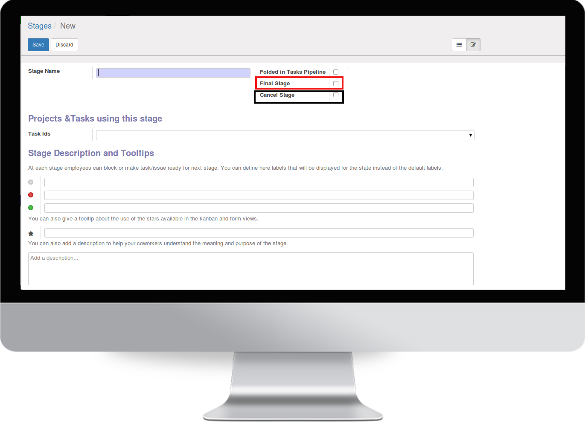
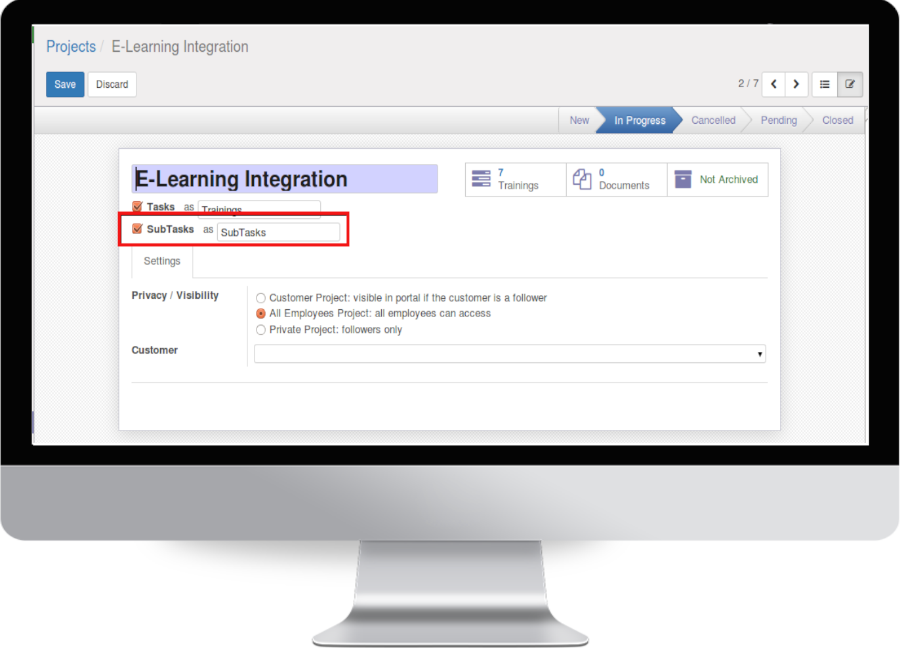
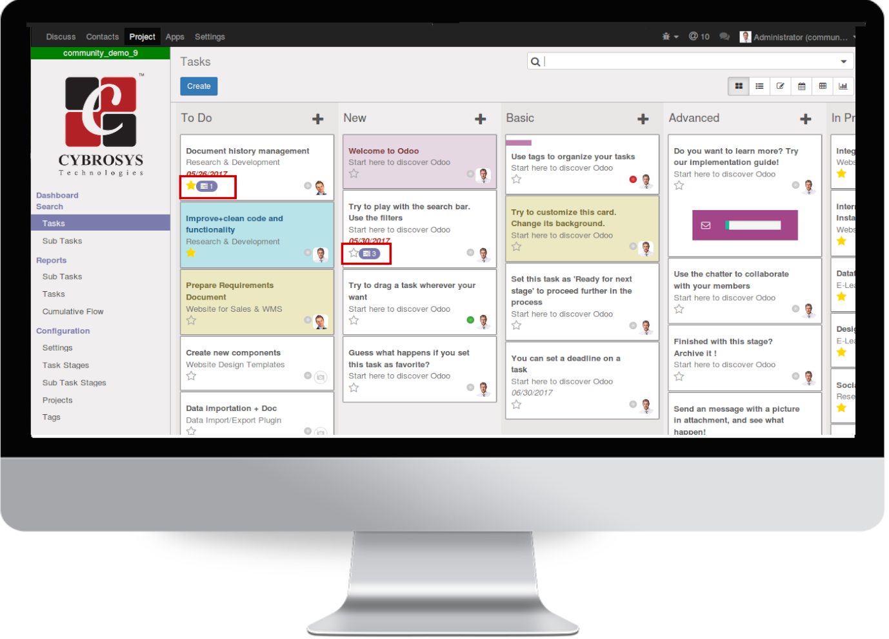
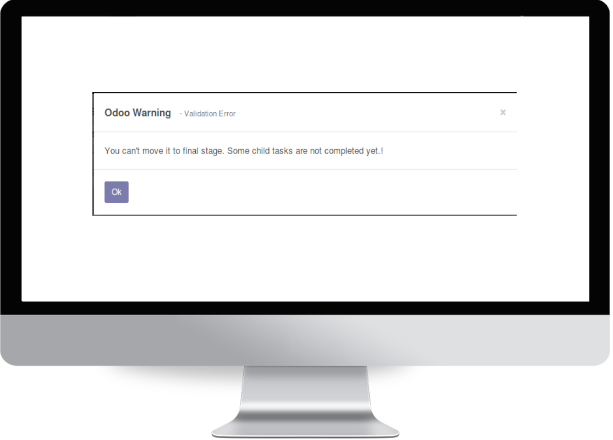

☑ Sub-task Feature for Project. ☑ Sub-Task Lists Under Task. ☑ Sub-Task Count in Task Kanban View. ☑ Sub-Task Stages in Configuration. ☑ Sub-Task Analysis Under Report. ☑ Deadline Validation for Sub-Task. ☑ Stage Validation for Sub-Task.
Overview
Currently Odoo has no sub-task feature in project. This module brings "SUB-TASK" forms and its configuration for projects with configured stages.
User can also analyse the sub tasks under the project reporting menu dynamically.
Sub Task Configuration
Project -> Configuration -> Sub Task Stages

☛ Please tick marked fields to identify your final stage and cancel stage.

☛ If you want to create sub tasks for your project please select the option Sub Tasks.
Sub Task Creation
You can create sub tasks via 2 ways.
☛ Create sub tasks directly from Menu 'Sub Task'.
☛ Create sub tasks from task itself
Sub-Task Count in Task Kanban View

☛ You can see the count of sub task on each task's kanaban view
Sub-Task Analysis
Stage Validation for Sub-Task

☛ You cant move your task into final stage until all sub tasks are reach in final stage
Automatically Cancel/kill the sub-task by moving parent task to 'cancel'
☛ When you move your task into cancel stage then all sub tasks also will go to cancel stage